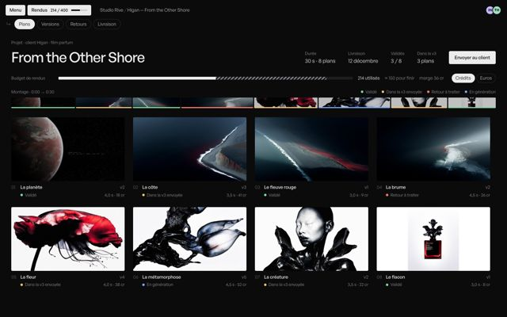
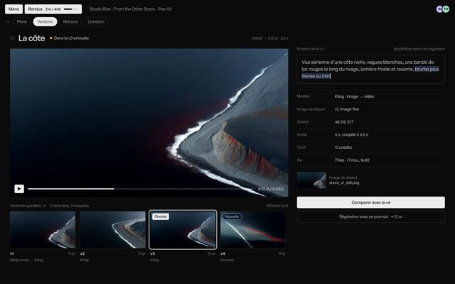
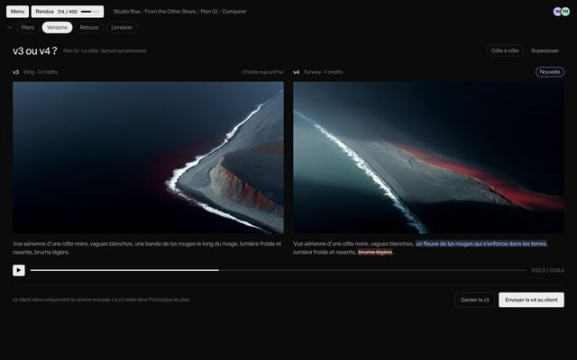
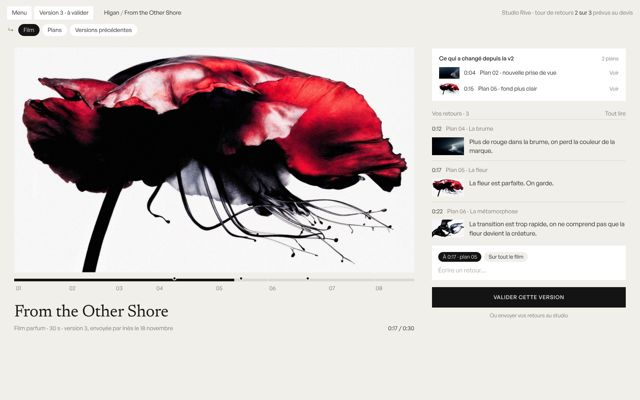
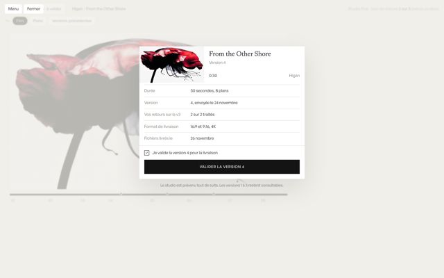
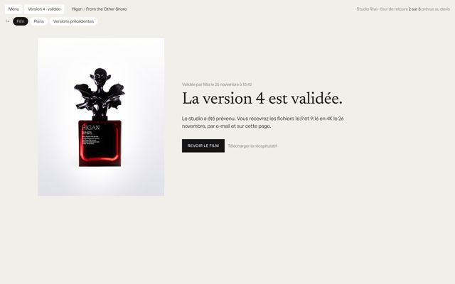
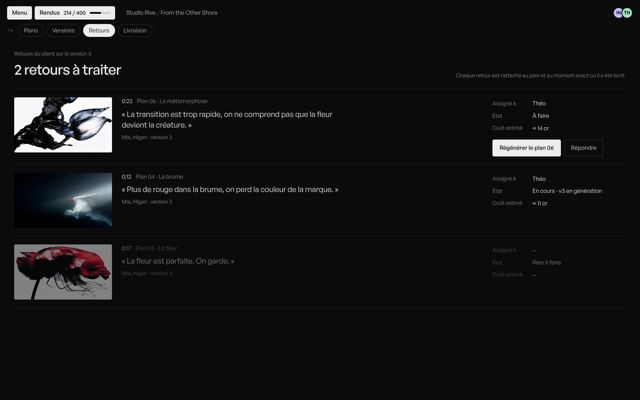
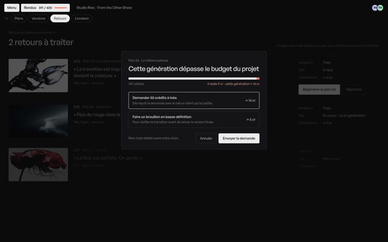
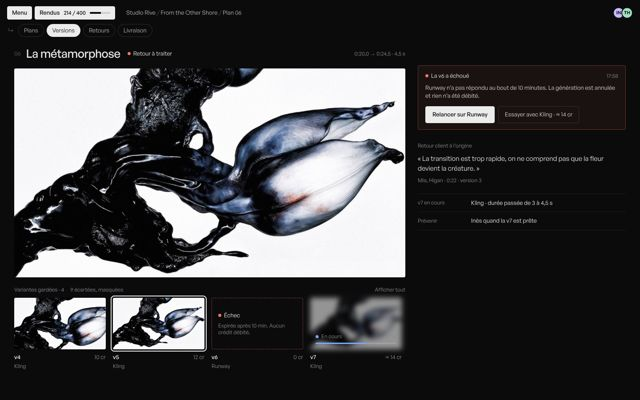
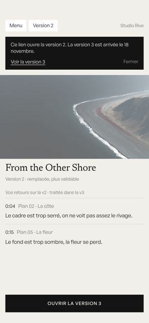

Concept d’outil pour les studios qui produisent des vidéos en IA. Studio, client et film fictifs ; visuels issus de mon projet Higan. À voir sur ordinateur. Parcours conseillé : Projet → Plan → Comparer → Revue client → Validation.
Commencer le parcours → · Lire le case study

01 — Projet
02 — Plan et variantes
03 — Comparer deux versions
04 — Revue client
05 — Validation
06 — Version validée
07 — Retours à traiter
08 — Budget dépassé
09 — Génération ratée
10 — Mobile, ancien lien